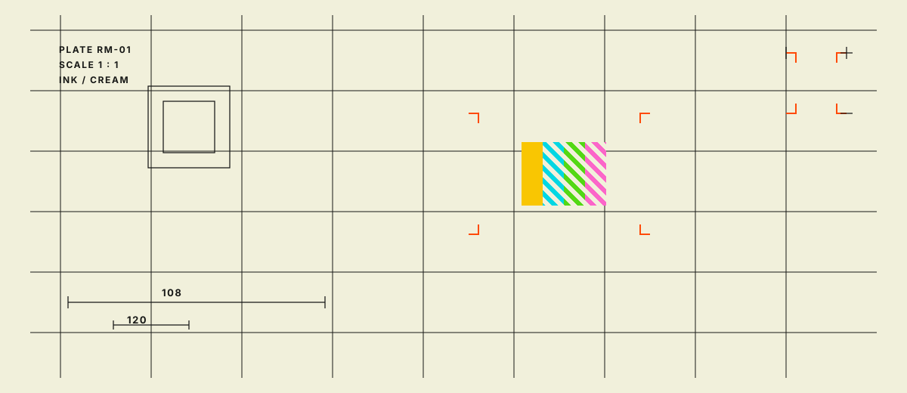

Fig. 01 · Ruled plate, kit mark
Radiant Austerity UI Kit · drawn 2026-11-21
What changed
Web components on the UI SDK. Yellow for the action. Orange for the reticle.
Cream paper, ink rules, and a sheet with corner dots. The stripes mark categories. They are not buttons.
Release
0.1.0
Date
2026-11-21
Supersedes
—
Change
218 parts
Lines
+ new
QC
Passed
01
Sheet frame
Frame
A cream sheet, a 2px ink border, corner dots, and a ruler with orange ticks.
02
Callout
Note
A square mark, a leader, a letter chip, and a boxed label.
03
Version mark
Type
Inter numerals for a release. Geist Serif stays on the wordmark and the prose.
04
Spec row
Table
Ruled cells for release, date, supersedes, change, lines, and QC.
05
Swatches
Mark
Striped yellow, cyan, lime, and magenta. Ink is the solid field.
06
Change list
List
Numbered notes in two columns, with tag chips and ink rules.
07
Barcode
Code 128
Bars drawn from a string, with a quiet zone and an Inter caption.
08
Seal
Mark
Circular text around an orange reticle. It holds still when motion is reduced.
Radiant Austerity UI Kit 0.1.0
An engineering plate for a component library
Drawn 2026-11-21